Butoh Dance · Shadow Theatre · Live Music Danza Butoh · Teatro de Sombras · Música en Vivo Butoh-Dans · Skygge-Teater · Live Musik Butoh-Dans · Skygge-Teater · Live Musikk Butoh-Dans · Skuggteater · Livemusik
Pierina Lategola · Ada Gomiz · Tatiana Zuccolotto
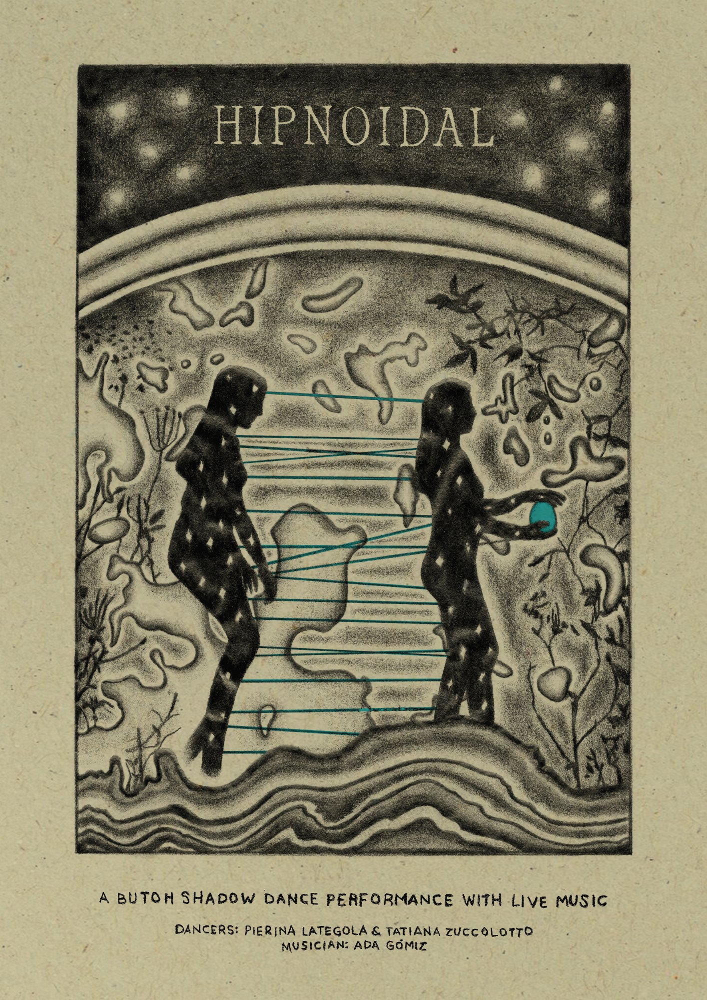
About Sobre la obra Om forestillingen Om forestillingen Om verket
Hipnoidal is an interdisciplinary work combining butoh dance, shadow theater, and live music that evokes a state between dreams and wakefulness. From this in-between place, we seek to delve into the wonder of the living, exploring the connection with ephemeral territories, elemental forces and that body traversing memories to amplify what we perceive as world, as self, as other.
Through the primal relationship between light and darkness, the boundaries between the human and the non-human are blurred, revealing nuances in search of meanings that transcend us.
Hipnoidal es una obra interdisciplinaria que combina danza butoh, teatro de sombras y música en vivo que evoca un estado entre el sueño y la vigilia. Desde ese lugar intermedio, buscamos adentrarnos en la maravilla de lo viviente, explorando la conexión con territorios efímeros, fuerzas elementales y ese cuerpo que atraviesa memorias para ampliar lo que percibimos como mundo, como uno mismo, como otro.
A través de la relación primigenia entre luz y oscuridad, se difuminan los límites entre lo humano y lo no humano, revelando matices en busca de significados que nos trascienden.
Hipnoidal er et tværfagligt værk, der kombinerer butoh-dans, skygge-teater og live musik, som fremkalder en tilstand mellem drøm og vågenhed. Fra dette mellemrum søger vi at dykke ned i underet ved det levende, og udforske forbindelsen til flygtige territorier, elementale kræfter og den krop, der krydser minder for at udvide det, vi opfatter som verden, som selvet, som den anden.
Gennem det primære forhold mellem lys og mørke sløres grænserne mellem det menneskelige og det ikke-menneskelige, og afslører nuancer i søgen efter mening, der transcenderer os.
Hipnoidal er et tverrfaglig verk som kombinerer butoh-dans, skygge-teater og live musikk, som fremkaller en tilstand mellom drøm og våkenhet. Fra dette mellomrommet søker vi å fordype oss i underet ved det levende, og utforske forbindelsen til flyktige territorier, elementale krefter og den kroppen som krysser minner for å utvide det vi oppfatter som verden, som selv, som den andre.
Gjennom det primære forholdet mellom lys og mørke viskes grensene mellom det menneskelige og det ikke-menneskelige ut, og avslører nyanser i søken etter mening som transcenderer oss.
Hipnoidal är ett interdisciplinärt verk som kombinerar butoh-dans, skuggteater och livemusik, som framkallar ett tillstånd mellan dröm och vakenhet. Från detta mellanrum söker vi att fördjupa oss i undret hos det levande, och utforska sambandet med flyktiga territorier, elementala krafter och den kropp som korsar minnen för att vidga vad vi uppfattar som värld, som jag, som den andre.
Genom det ursprungliga förhållandet mellan ljus och mörker suddas gränserna mellan det mänskliga och det icke-mänskliga ut, och avslöjar nyanser i sökandet efter mening som transcenderar oss.
Concept Concepto Koncept Konsept Koncept
"Human beings can live fully thanks to the dead — that generates the energy to live; the problem of the capacity for imagination is intimately linked to this: it is the sustenance of existence; a bright future can exist through the deep gratitude or grace granted by those who lived before. A concept is generated within the superimposition of the infinite. The rational concept, already formed, represents nothing more than the root of the human being. Illusion, dream, fantasy and delirium are important. To give thanks is 'to care for life beyond oneself and the other'; we must care for the grace of the dead, we must put in order the dwelling of the dead, we must wish that they grow alongside the living."
— Kazuo Ohno
"El ser humano puede vivir con plenitud gracias a los muertos, eso genera la energía para poder vivir; el problema de la capacidad de la imaginación está íntimamente ligado a esto: es el sostén de la existencia; el futuro brillante puede existir por medio del profundo agradecimiento o las gracias que conceden los que han vivido antes. Un concepto se genera dentro de la superposición de lo infinito. El concepto racional, ya formado, representa nada más que la raíz del ser humano. Son importantes la ilusión, el sueño, la fantasía y el delirio. Agradecer es 'cuidar la vida más allá de uno mismo y del otro'; debemos cuidar la gracia de los muertos, debemos ordenar la vivienda de los muertos, debemos desear que ellos crezcan junto con los vivos."
— Kazuo Ohno
"Mennesket kan leve fuldt ud takket være de døde — det genererer energien til at leve; problemet med forestillingsevnen er intimt forbundet med dette: det er eksistensens næring; en lys fremtid kan eksistere gennem den dybe taknemmelighed eller nåde, der gives af dem, der levede før. Et begreb skabes inden for overlejringen af det uendelige. Det rationelle begreb, allerede dannet, repræsenterer intet andet end menneskenes rod. Illusion, drøm, fantasi og delirium er vigtige. At takke er 'at tage sig af livet ud over sig selv og den anden'; vi må tage os af de dødes nåde, vi må sætte orden i de dødes bolig, vi må ønske, at de vokser sammen med de levende."
— Kazuo Ohno
"Mennesket kan leve fullt ut takket være de døde — det genererer energien til å leve; problemet med forestillingsevnen er intimt forbundet med dette: det er eksistensens næring; en lys fremtid kan eksistere gjennom den dype takknemligheten eller nåden som gis av dem som levde før. Et begrep skapes innenfor overlagringen av det uendelige. Det rasjonelle begrepet, allerede dannet, representerer intet annet enn menneskehetens rot. Illusjon, drøm, fantasi og delirium er viktige. Å takke er 'å ta seg av livet utover seg selv og den andre'; vi må ta oss av de dødes nåde, vi må sette orden i de dødes bolig, vi må ønske at de vokser sammen med de levende."
— Kazuo Ohno
"Människan kan leva fullt ut tack vare de döda — det genererar energin att leva; problemet med föreställningsförmågan är intimt kopplat till detta: det är existensens näring; en ljus framtid kan existera genom den djupa tacksamheten eller nåden som ges av dem som levde före. Ett begrepp skapas inom överskiktningen av det oändliga. Det rationella begreppet, redan format, representerar inget annat än människans rot. Illusion, dröm, fantasi och delirium är viktiga. Att tacka är 'att vårda livet bortom sig själv och den andre'; vi måste vårda de dödas nåd, vi måste ordna de dödas boning, vi måste önska att de växer tillsammans med de levande."
— Kazuo Ohno
Lives are woven into infinite materialities and durations.
There, far back, the threads of the past move ours.
There was a time of cosmological immensities.
We were matter without memory traveling in the Void.
We continue to explore what awakens the encounter with another.
We continue to investigate how to build a home without land, a nomadic home.
Being a force recognizing itself in an environment full of other forms of life different from its own.
Las vidas se tejen en materialidades y duraciones infinitas.
Allí, en lo profundo, los hilos del pasado mueven los nuestros.
Hubo un tiempo de inmensidades cosmológicas.
Éramos materia sin memoria viajando en el Vacío.
Continuamos explorando lo que despierta el encuentro con el otro.
Continuamos investigando cómo construir un hogar sin tierra, un hogar nómade.
Ser una fuerza que se reconoce a sí misma en un entorno lleno de otras formas de vida diferentes a la propia.
Liv er vævet ind i uendelige materialiteter og varigheder.
Dér, langt bagude, bevæger fortidens tråde vores.
Der var en tid med kosmologiske immensiteter.
Vi var stof uden hukommelse, der rejste i Tomrummet.
Vi fortsætter med at udforske, hvad der vækker mødet med en anden.
Vi forsætter med at undersøge, hvordan man bygger et hjem uden jord, et nomadisk hjem.
At være en kraft, der genkender sig selv i et miljø fyldt med andre livsformer, der er anderledes end ens egne.
Liv er vevd inn i uendelige materialiteter og varigheter.
Der, langt bak, beveger fortidens tråder våre.
Det var en tid med kosmologiske immensiteter.
Vi var materie uten minne som reiste i Tomrommet.
Vi fortsetter med å utforske hva som vekker møtet med en annen.
Vi fortsetter med å undersøke hvordan man bygger et hjem uten jord, et nomadisk hjem.
Å være en kraft som kjenner seg igjen i et miljø fylt med andre livsformer som er forskjellige fra ens egne.
Liv är vävda in i oändliga materialiteter och varaktigheter.
Där, långt bak, rör förflutenhetens trådar våra.
Det var en tid av kosmologiska immensiteter.
Vi var materia utan minne som reste i Tomrummet.
Vi fortsätter att utforska vad som väcker mötet med en annan.
Vi fortsätter att undersöka hur man bygger ett hem utan land, ett nomadiskt hem.
Att vara en kraft som känner igen sig själv i en miljö full av andra livsformer som skiljer sig från den egna.
Images, sounds, and movements are woven together to generate an intermedial state from which to know and not know ourselves, over and over again. Hipnoidal is a work to remember the cycles, metamorphosis, and finitude of all living organisms. A work created in gratitude to the time we are given.
Imágenes, sonidos y movimientos se tejen juntos para generar un estado intermedial desde el cual conocernos y desconocernos, una y otra vez. Hipnoidal es una obra para recordar los ciclos, la metamorfosis y la finitud de todos los organismos vivos. Una obra creada en gratitud al tiempo que se nos da.
Billeder, lyde og bevægelser er vævet sammen for at skabe en intermedial tilstand, hvorfra vi kan kende og ikke kende os selv, igen og igen. Hipnoidal er et værk til at huske cyklusserne, metamorfosen og endeligheden hos alle levende organismer. Et værk skabt i taknemmelighed over den tid, vi er givet.
Bilder, lyder og bevegelser er vevd sammen for å skape en intermedial tilstand som vi kan kjenne og ikke kjenne oss selv fra, igjen og igjen. Hipnoidal er et verk for å huske syklusene, metamorfosen og endeligheten til alle levende organismer. Et verk skabt i takknemlighet for den tiden vi er gitt.
Bilder, ljud och rörelser är vävda samman för att skapa ett intermedialt tillstånd varifrån vi kan känna och inte känna oss själva, om och om igen. Hipnoidal är ett verk för att minnas cyklerna, metamorfosen och ändligheten hos alla levande organismer. Ett verk skapat i tacksamhet för den tid vi ges.
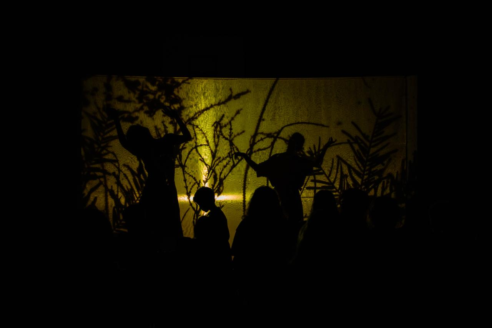
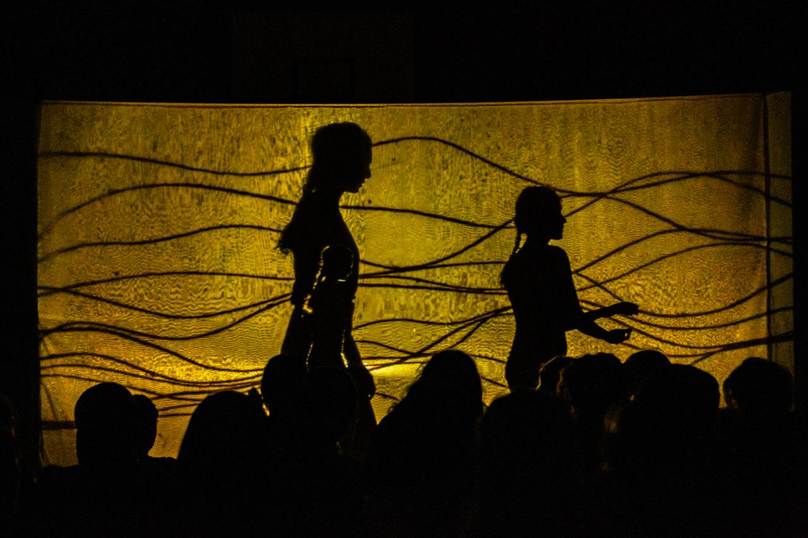
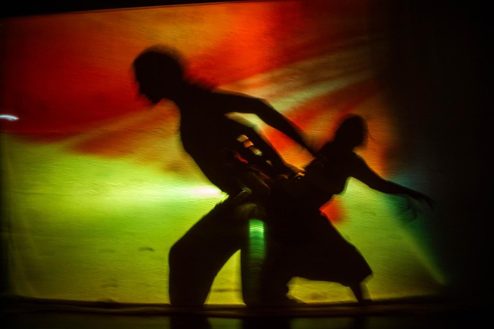
Scenic Set Up Montaje Escénico Scenisk Opsætning Scenisk Oppsett Scenisk Upplägg
A semi-transparent fabric separates the audience from the performers, acting as a screen onto which visuals and the silhouettes of the bodies are projected. The musical performer is behind the fabric.
Una tela semitransparente separa al público de los intérpretes, actuando como pantalla sobre la que se proyectan imágenes y las siluetas de los cuerpos. El intérprete musical está detrás de la tela.
Et halvgennemsigtigt stof adskiller publikum fra kunstnerne og fungerer som en skærm, hvorpå visuals og kroppenes silhuetter projiceres. Den musikalske kunstner er bag stoffet.
Et halvgjennomsiktig stoff skiller publikum fra utøverne og fungerer som en skjerm der visuals og kroppenes silhuetter projiseres. Den musikalske utøveren er bak stoffet.
Ett halvtransparent tyg separerar publiken från utövarna och fungerar som en skärm på vilken visuella element och kropparnas silhuetter projiceras. Den musikaliska utövaren befinner sig bakom tyget.
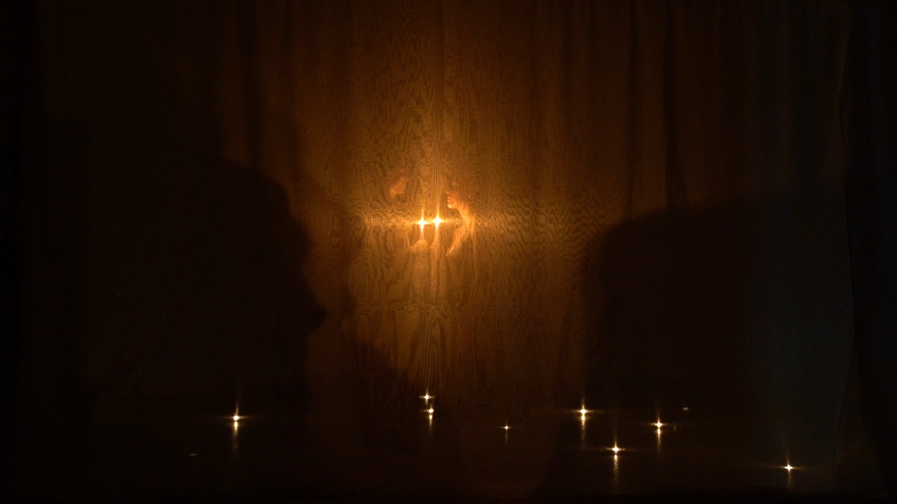
Artists' Biographies Biografías Kunstnerbiografier Kunstnerbiografier Konstnärsbiografier
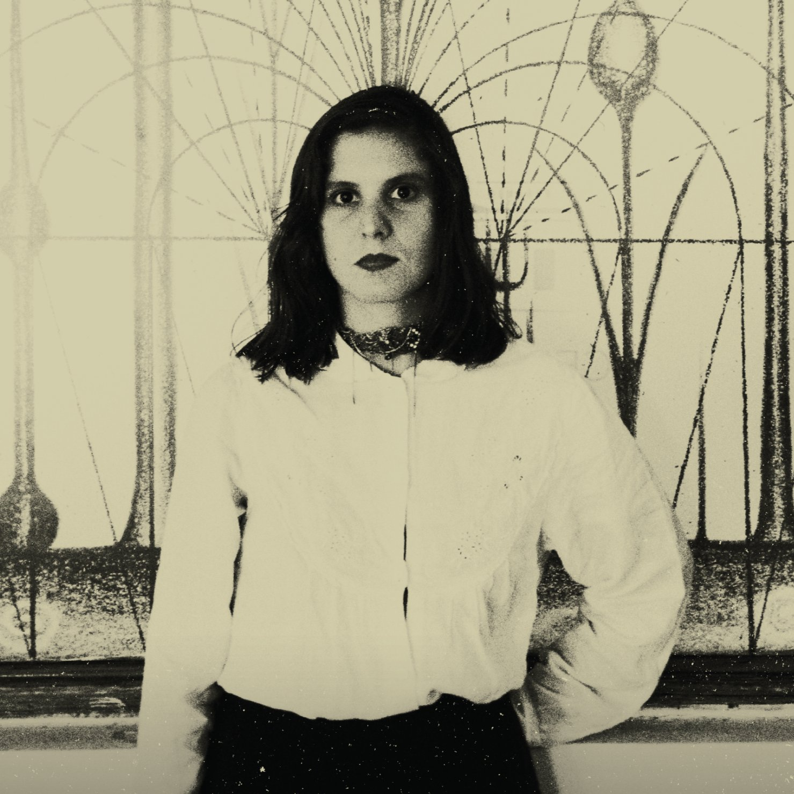
Pierina Lategola
Visual artist, illustrator, graphic designer & performer · UNA, La Plata, Argentina Artista visual, ilustradora, diseñadora gráfica y performer · UNA, La Plata, Argentina Visuel kunstner, illustrator, grafisk designer og performer · UNA, La Plata, Argentina Visuell kunstner, illustratør, grafisk designer og performer · UNA, La Plata, Argentina Visuell konstnär, illustratör, grafisk designer och performer · UNA, La Plata, Argentina
Her poetics are nourished by physical-ritual-somatic practices, intuitions, dreams and nomadic experiences in nature. She explores the convergence between drawing, vocal improvisation, butoh dance, and poetry.
Su poética se nutre de prácticas físico-rituales-somáticas, intuiciones, sueños y experiencias nómadas en la naturaleza. Explora la convergencia entre el dibujo, la improvisación vocal, la danza butoh y la poesía.
Hendes poetik næres af fysisk-ritual-somatiske praksisser, intuitioner, drømme og nomadiske oplevelser i naturen. Hun udforsker konvergensen mellem tegning, vokal improvisation, butoh-dans og poesi.
Hennes poetikk næres av fysisk-ritual-somatiske praksiser, intuisjoner, drømmer og nomadiske opplevelser i naturen. Hun utforsker konvergensen mellom tegning, vokal improvisasjon, butoh-dans og poesi.
Hennes poetik närs av fysisk-rituell-somatiska praktiker, intuitioner, drömmar och nomadiska upplevelser i naturen. Hon utforskar konvergensen mellan teckning, vokal improvisation, butoh-dans och poesi.
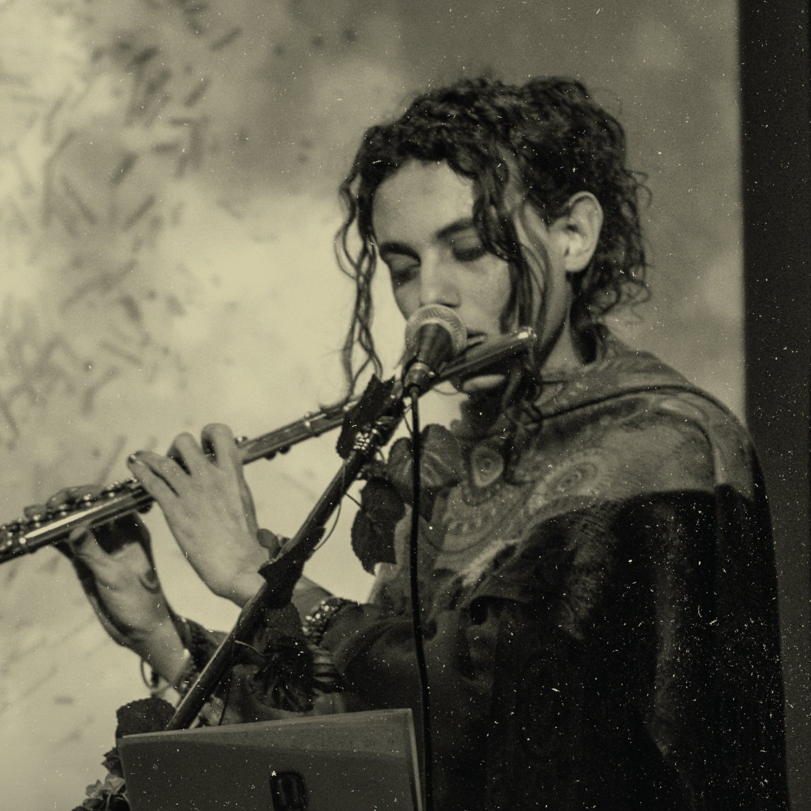
Ada Gomiz
Composer, singer, wind player & performer · UNTREF, Buenos Aires, Argentina Compositora, cantante, instrumentista de viento y performer · UNTREF, Buenos Aires, Argentina Komponist, sanger, blæser og performer · UNTREF, Buenos Aires, Argentina Komponist, sanger, blåser og performer · UNTREF, Buenos Aires, Argentina Kompositör, sångare, blåsare och performer · UNTREF, Buenos Aires, Argentina
Her work is focused on the intersections between contemporary chamber music composition, the cosmopoetics of Latin American neo-baroque literature, flamenco, performance, and transmedia experimentation through digital languages. She inhabits practices oriented towards improvisation, sound art, performance and dream intermedialities.
Su trabajo se centra en las intersecciones entre la composición musical de cámara contemporánea, la cosmopoética de la literatura neobarroca latinoamericana, el flamenco, la performance y la experimentación transmedia a través de lenguajes digitales. Habita prácticas orientadas hacia la improvisación, el arte sonoro, la performance y las intermedialidades oníricas.
Hendes arbejde er fokuseret på krydsfelterne mellem samtidskomposition af kammermusik, cosmopoetikken i latinamerikansk neobarok litteratur, flamenco, performance og transmedial eksperimentering gennem digitale sprog. Hun bebor praksisser orienteret mod improvisation, lydkunst, performance og drømmens intermedialiteter.
Hennes arbeid er fokusert på skjæringspunktene mellom samtidskomposisjon for kammermusikk, cosmopoetikken i latinamerikansk neobarokk litteratur, flamenco, performance og transmedial eksperimentering gjennom digitale språk. Hun bebor praksiser orientert mot improvisasjon, lydkunst, performance og drømmens intermedialiteter.
Hennes arbete är fokuserat på skärningspunkterna mellan samtida kammarmusikkomposition, cosmopoetiken i latinamerikansk neobarock litteratur, flamenco, performance och transmedial experimentering genom digitala språk. Hon bebor praktiker orienterade mot improvisation, ljudkonst, performance och drömmarnas intermedialiteter.
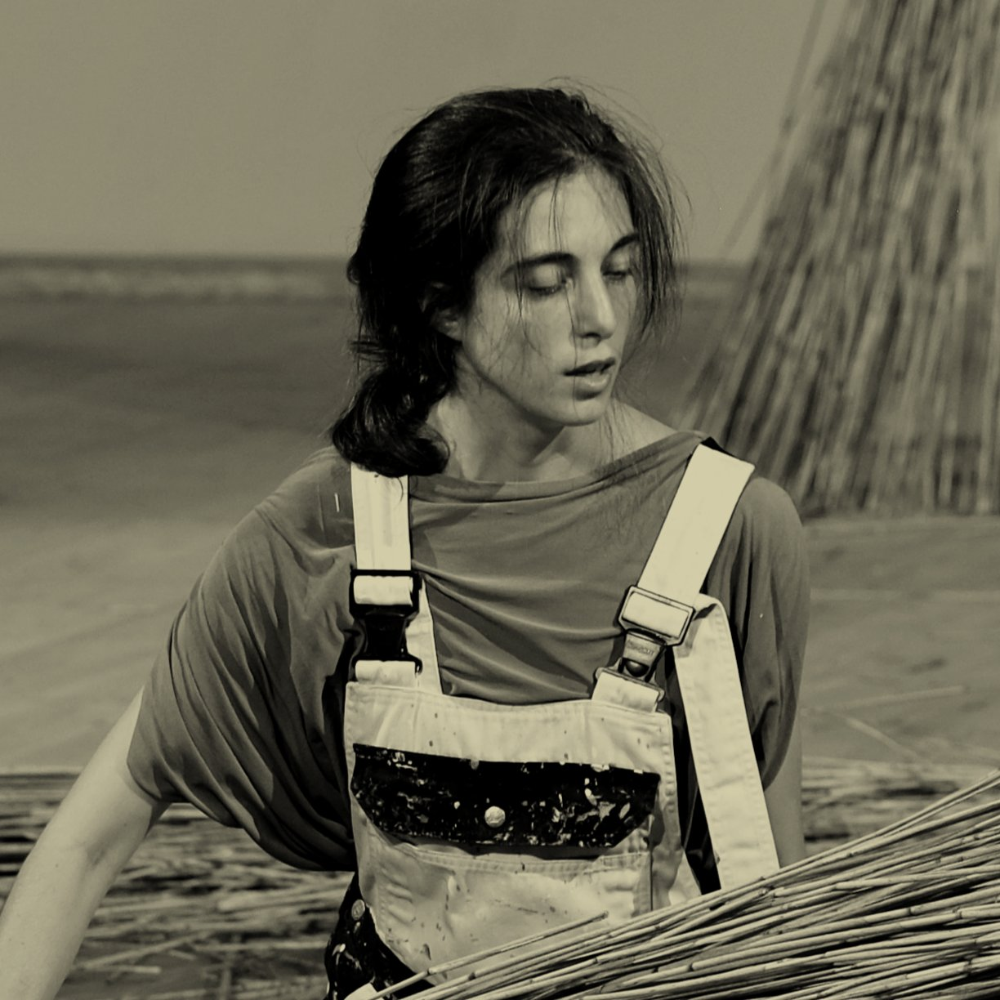
Tatiana Zuccolotto
Actress, dancer & performer · Nordjylland, Denmark / Buenos Aires, Argentina Actriz, bailarina y performer · Nordjylland, Dinamarca / Buenos Aires, Argentina Skuespiller, danser og performer · Nordjylland, Danmark / Buenos Aires, Argentina Skuespiller, danser og performer · Nordjylland, Danmark / Buenos Aires, Argentina Skådespelare, dansare och performer · Nordjylland, Danmark / Buenos Aires, Argentina
An Argentine performer currently living in the North of Denmark. Her body of work explores the realms of theatre, dance, music and storytelling. Silence, conversion of languages, migration and the cycles of life are some of the themes around which her work develops. She has been co-directing and performing in: Do we pray enough (2023–2025), Hipnoidal (2025), Creative Sounds and Visuals — Frauen Festival, Antagon Teater Aktion (2024), Somewhere there will be birds flying (2024), Birds from the North (2023) and Siesta de Miel (2021).
Performer argentina que actualmente vive en el norte de Dinamarca. Su obra explora los ámbitos del teatro, la danza, la música y la narración. El silencio, la conversión de lenguajes, la migración y los ciclos de la vida son algunos de los temas en torno a los cuales se desarrolla su trabajo. Ha codirigido y actuado en: Do we pray enough (2023–2025), Hipnoidal (2025), Creative Sounds and Visuals — Frauen Festival, Antagon Teater Aktion (2024), Somewhere there will be birds flying (2024), Birds from the North (2023) y Siesta de Miel (2021).
En argentinsk kunstner, der i øjeblikket bor i det nordlige Danmark. Hendes arbejde udforsker teatrets, dansens, musikens og fortællingens verdener. Stilhed, sproglig omsætning, migration og livets cyklusser er temaer, som hendes arbejde udvikler sig omkring. Hun har medregisseret og optrådt i: Do we pray enough (2023–2025), Hipnoidal (2025), Creative Sounds and Visuals — Frauen Festival, Antagon Teater Aktion (2024), Somewhere there will be birds flying (2024), Birds from the North (2023) og Siesta de Miel (2021).
En argentinsk utøver som for øyeblikket bor i Nord-Danmark. Hennes arbeider utforsker teatrets, dansens, musikens og forttellingens verdener. Stillhet, språklig konvertering, migrasjon og livets sykluser er temaer som hennes arbeid utvikler seg rundt. Hun har medregissert og opptrådt i: Do we pray enough (2023–2025), Hipnoidal (2025), Creative Sounds and Visuals — Frauen Festival, Antagon Teater Aktion (2024), Somewhere there will be birds flying (2024), Birds from the North (2023) og Siesta de Miel (2021).
En argentinsk konstnär som för närvarande bor i norra Danmark. Hennes verk utforskar teaterns, dansens, musikens och berättandets världar. Tystnad, språklig konvertering, migration och livets cykler är teman runt vilka hennes arbete utvecklas. Hon har medregisserat och uppträtt i: Do we pray enough (2023–2025), Hipnoidal (2025), Creative Sounds and Visuals — Frauen Festival, Antagon Teater Aktion (2024), Somewhere there will be birds flying (2024), Birds from the North (2023) och Siesta de Miel (2021).
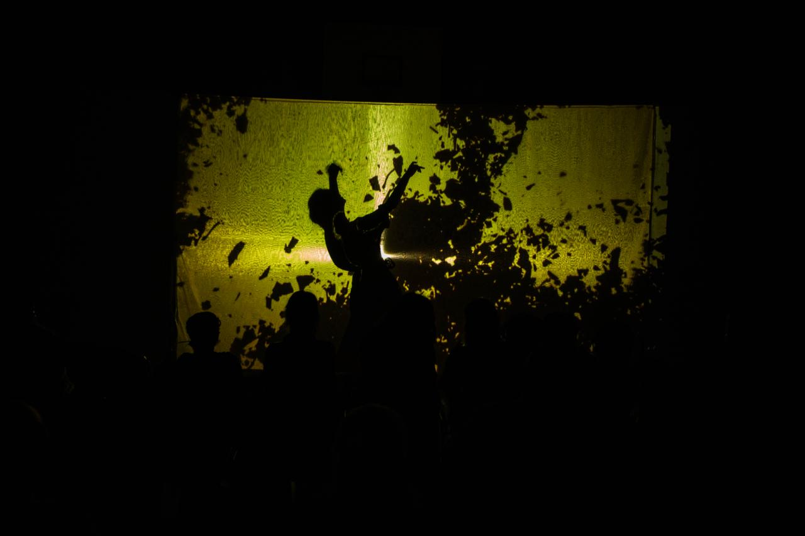
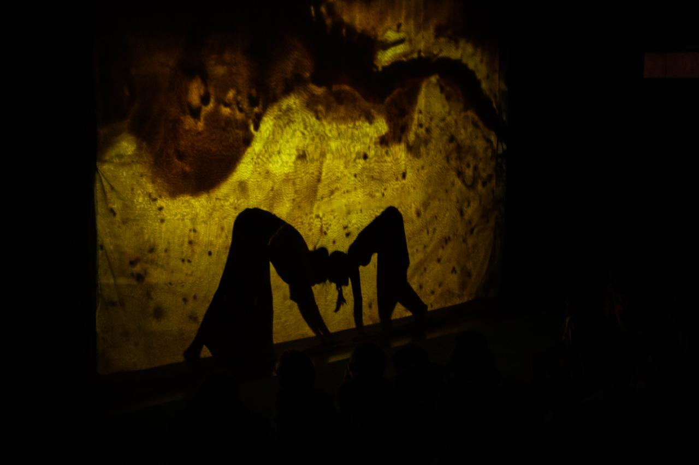
Presentations 2025 Presentaciones 2025 Forestillinger 2025 Forestillinger 2025 Föreställningar 2025
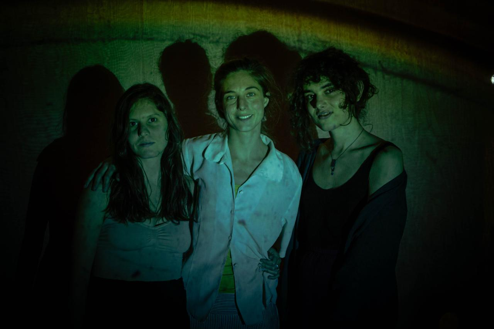
We are currently scheduling dates for our Nordic tour in August 2026. We are open to performing in theaters, art spaces, festivals, museums, and alternative venues across Denmark, Norway, Sweden, and beyond.
Estamos agendando fechas para nuestra gira nórdica en agosto de 2026. Estamos abiertos a presentaciones en teatros, espacios de arte, festivales, museos y venues alternativos en Dinamarca, Noruega, Suecia y más allá.
Vi er i gang med at planlægge datoer for vores nordiske turné i august 2026. Vi er åbne for optræden på teatre, kunstrum, festivaler, museer og alternative spillesteder i Danmark, Norge, Sverige og videre.
Vi planlegger for øyeblikket datoer for vår nordiske turné i august 2026. Vi er åpne for opptredener på teatre, kunstrom, festivaler, museer og alternative spillesteder i Danmark, Norge, Sverige og videre.
Vi planerar för närvarande datum för vår nordiska turné i augusti 2026. Vi är öppna för uppträdanden på teatrar, konstrum, festivaler, museer och alternativa spelplatser i Danmark, Norge, Sverige och vidare.
For bookings and inquiries, reach us through Para reservas y consultas, escríbenos a For bookinger og henvendelser, skriv til os via For bookinger og forespørsler, kontakt oss gjennom För bokningar och förfrågningar, kontakta oss via
The piece requires a dark performance space and a semi-transparent fabric screen. Duration: 50–60 min. We travel light and adapt to intimate and large venues alike.
La obra requiere un espacio oscuro y una tela semitransparente como pantalla. Duración: 50–60 min. Viajamos liviano y nos adaptamos tanto a espacios íntimos como a venues más grandes.
Stykket kræver et mørkt rum og et halvgennemsigtigt stof som skærm. Varighed: 50–60 min. Vi rejser let og tilpasser os til både intime og større spillesteder.
Stykket krever et mørkt rom og et halvgjennomsiktig stoff som skjerm. Varighet: 50–60 min. Vi reiser lett og tilpasser oss til både intime og større spillesteder.
Stycket kräver ett mörkt rum och ett halvtransparent tyg som skärm. Varaktighet: 50–60 min. Vi reser lätt och anpassar oss till både intima och större spelplatser.